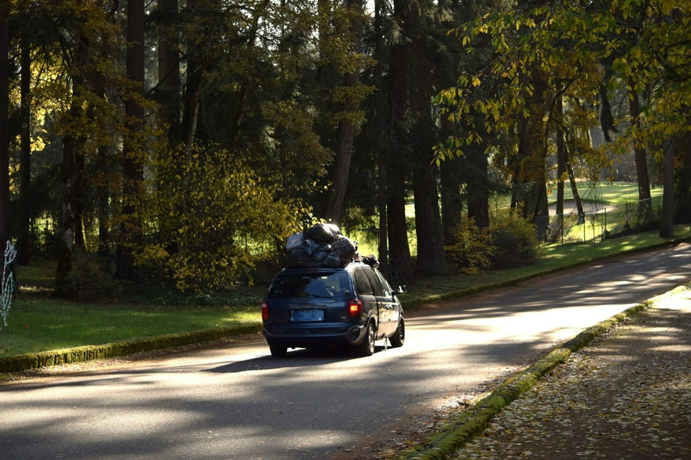

The Busiest Driving Week of the Year
Thanksgiving puts a lot of people on the road at the same time. AAA's forecast for the 2025 holiday projected a record 81.8 million people traveling at least 50 miles from home, with about 73 million of them, nearly 90 percent, going by car. The National Safety Council estimated 439 traffic deaths during the 2025 Thanksgiving holiday period, and about 35 percent of the fatalities involved an alcohol-impaired driver. Most crashes are not fatal, but many cause injuries that are easy to dismiss at first.
This is a practical guide to what to do if you or your family are in a collision on the way to or from a holiday gathering. It is educational information, not medical advice for any one person.
In the First Minutes
- Get to safety if you can, and call 911 if anyone is hurt or the vehicles cannot be moved safely.
- If you have severe neck pain, numbness, tingling, or weakness, stay still and wait for emergency responders instead of getting out of the car.
- Accept the ambulance or ER check if anyone has a head injury, passed out, or feels confused, or if there is chest or abdominal pain.
- Check everyone. Children and older passengers may not report symptoms on their own.
"I Feel Fine" Is Not the All-Clear
Many people feel shaken but largely unhurt at the scene, then wake up stiff the next morning. The stress response can blunt pain for the first hours after a collision, and soft tissue inflammation commonly builds over the next day or two. We explain the science in our article on why whiplash symptoms are often delayed. The practical point is that a holiday weekend is a bad time to decide that nothing is wrong simply because nothing hurts yet.
Worth knowing: Pushing through the holiday and "seeing how it feels on Monday" is understandable. But if your symptoms are getting worse, or any red flag below appears, do not wait.
Keep a Simple Record
- Take photos of the vehicles, the scene, and any visible marks on your body.
- Exchange names, contact information, and insurance details, and get the report number if police respond.
- Start a note on your phone with dates and times: what you feel, where, and whether it is getting better or worse.
A note written in the first days is more reliable than memory weeks later, and it helps whoever examines you understand how your symptoms have changed.
If It Happens Far From Home
You do not need to wait until you are back home to get something checked. Urgent problems belong in an emergency room wherever you are. For milder symptoms, getting seen locally or soon after you return home is reasonable. If you are not sure which applies, call or text Dr. Moore directly at (251) 281-8768, any time of day, including holidays. He can talk through what you are experiencing and help you decide whether and when to be seen.
What to Watch Over the Next Few Days
- Neck or upper back stiffness that is getting worse, or pain when turning your head
- Headaches, especially starting at the base of the skull
- Dizziness or unsteadiness. See our article on dizziness after a neck injury.
- Numbness, tingling, or weakness in an arm or hand
- Trouble concentrating, fogginess, unusual tiredness, or poor sleep. See our article on concussion after a crash with normal scans.
- In children: changes in behavior, sleep, or appetite, or a reluctance to move the head or neck
Red Flags: Get Emergency Care
Call 911 or go to the nearest emergency room for any of the following after a collision:
- Loss of consciousness, confusion, repeated vomiting, or a seizure
- A headache that keeps getting worse, or a sudden severe headache
- Severe neck pain, or neck pain with numbness, weakness, or trouble walking
- Slurred speech, double vision, or trouble swallowing
- Chest pain, belly pain or swelling, or trouble breathing
- Loss of bladder or bowel control
If you are unsure, get checked.
Seen Together, Not Just One at a Time
When several family members are in the same vehicle, each person's symptoms may look different and develop on a different schedule. Having everyone who was in the car evaluated, even those who feel fine, gives a clear starting point if symptoms appear later. Our car accident care page explains how care after a collision works, and why to be seen even if you feel fine.
Where Dr. Moore's Training Fits
Dr. Moore is a Fellow in Primary Spine Care (FPSC) and has completed radiology mini-fellowships through SUNY Jacobs in neuroradiology, advanced MRI of the spine, and musculoskeletal radiology. His postgraduate coursework includes traumatic brain injury and concussion, and his practice focuses on spinal trauma. Chiropractic care does not replace emergency care when that is needed, and part of a good evaluation is knowing when to refer. You can read more on the About page. Referring providers can see what a referral includes on the For Providers page.
Hurt in a collision? Call or text Dr. Moore directly at (251) 281-8768, any time of day. For emergencies, call 911.
Common Questions
Should I go to the emergency room after a crash if I feel fine?
Go to the emergency room or call 911 if anyone has a head injury, loss of consciousness, severe neck or back pain, numbness or weakness, chest or abdominal pain, or confusion. If you feel fine after a lower-speed collision, an in-person check within the first few days is still reasonable, because pain can be masked by the stress response at first.
How long after a crash can neck pain and headaches start?
Often within the first day or two, and sometimes later. Stiffness, headaches, and soreness commonly build over the first 24 to 72 hours as inflammation develops, and some symptoms, such as sleep and concentration problems, can appear in the following days or weeks. Our article on delayed whiplash symptoms explains why.
What should I do if the crash happens far from home?
Get urgent problems checked where you are, at an emergency room or urgent care. For milder symptoms, you can be seen locally or when you return home, but if symptoms are getting worse, do not wait for the trip to end. Keep photos, names, and a dated note of your symptoms on your phone.
Can I reach Dr. Moore over the holiday weekend?
Dr. Moore takes calls and texts directly at (251) 281-8768, any time of day, including holidays. He can talk through what you are experiencing and help you decide whether and when to be seen. For emergencies, call 911.
References
AAA. 81.8 million travelers to head 50 miles or more from home over Thanksgiving (2025 forecast). Reported by Lodging Magazine, November 17, 2025. Article.
National Safety Council. Thanksgiving Day. Injury Facts. injuryfacts.nsc.org.